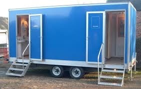

Bathroom While Camping

There are many things that people enjoy about camping, but there is one area that most campers agree on: using the bathroom while camping isn’t a relaxing or luxurious experience. Here are some tips on how to use the bathroom while camping.
Take biodegradable toilet paper with you when you go camping. Keep some of it stuffed in your pocket if you are heading out for an all day hike. That way you can use it, leave it in the woods, and nature will take care of the rest. Efficient campers will take a small shovel with them when they go camping for the instances when they feel more than a tinkle coming on. In this situation all you have to do is dig a small hole, do your business, and bury your solids when you are done—and the toilet paper, too.
If you don’t have access to bathroom facilities, check out your surroundings before you decide to go potty. It’s a bit more difficult for women to take a tinkle outdoors than men. Men can just put their backs to people and nothing really looks out of the ordinary. Women, on the other hand, have to truly expose themselves to take a tinkle, so make sure you are completely alone. To ensure that you have the utmost privacy before you drop your drawers, look around you in all directions. It’s easy to think you are completely alone, but halfway through a tinkle you may discover that you are only ten feet off a walking trail, or you’re giving people at a remote picnic area something to write home about.
Before you squat just anywhere, see what types of plants you’ll be in contact with. Coming down with a case of poison ivy, oak, or sumac on your privates will take all the fun out of your camping trip. If you realize too late that you’ve rubbed up against a poisonous plant, immediately wash the area. If your clothes have come in contact with the plant, change clothes as soon as you can. You should also check the area where you’ll be using the bathroom for snakes and bugs, too. No one wants a bite on their behind, especially if it’s from something poisonous.
If possible, have someone stand guard for you while you are doing your business. They can send out a warning to you if a hiker or camper is coming your way. While it’s true that some things just can’t be rushed, it can give you an extra few minutes to get into an area that is not as open—like behind a tree or large rock.
After you’ve finished up nature’s call, wash your hands. If you don’t have access to running water and soap, carry a small bottle of hand sanitizer with you. It’s better than nothing and it’ll kill any germs that could make you sick.